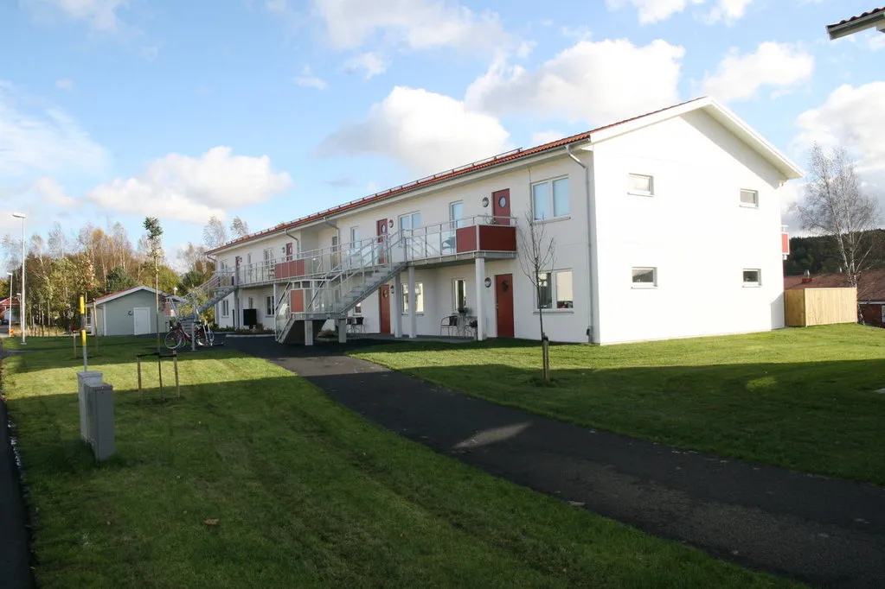

Ritningar & bygglov
Ritningar och bygglovshandlingar som underlag inför nästa steg.
KETTIL BYGGKONSULT
Ritningar, projektering, konstruktion och byggledning. Kunskap från både byggandet och förvaltningen.

Ritningar och bygglovshandlingar som underlag inför nästa steg.
Tekniskt kunnande genom projekteringen, konstruktionen och beräkningarna.
Hjälp med byggledning och kontrollansvarig för projektets genomförande.
Särskilt fokus på betongelement, tillverkningsritningar och montage.
ETT PERSPEKTIV SOM GÅR LÄNGRE
Kettils koncept utgår från hur hus fungerar även när byggprojektet är klart.
Genomtänkta planlösningar, tåliga material och ett effektivt byggsätt är centrala delar. Konceptet använder prefabricerade betongelement.
Utforska Kettils konceptKettils befintliga presentation lyfter samarbeten med 3Con, Kettil Axelsson Bygg, Tranemo G-betong och Prefab i Tranemo.
Samarbeten & kontaktvägarNÄSTA STEG BÖRJAR MED ETT SAMTAL